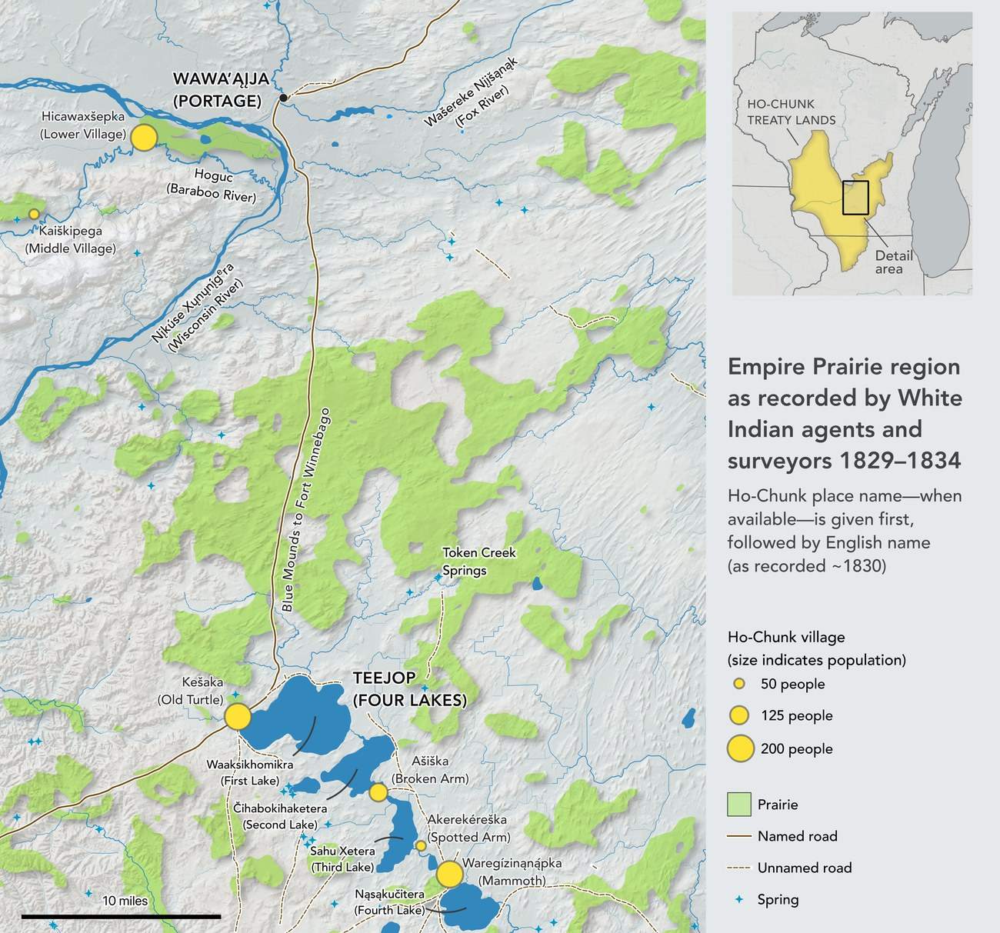
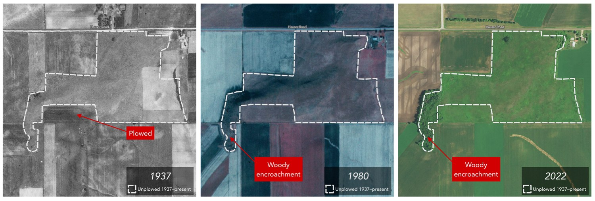
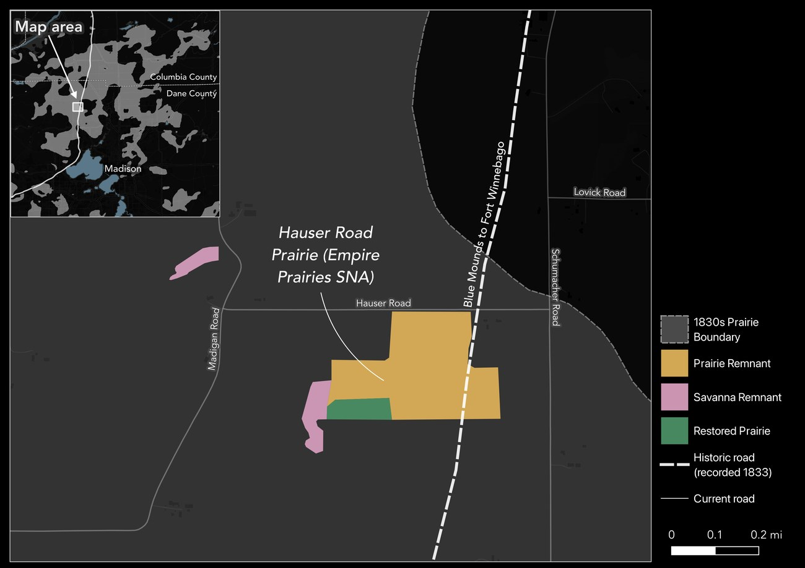

The Empire Prairie
Several of southern Wisconsin’s finest prairie remnants are described as fragments of the “Empire Prairie,” but there is very little information on precisely what that “Empire Prairie” was. Where were its borders? Why “empire”? How did it differ from the region’s countless other prairies? And what survives today? This series set out to answer those questions with narrative reporting and detailed mapping.

Using the original General Land Office survey records and other archival sources, I reconstructed the prairie’s extent and rendered it as a set of original maps—then wrote the history around them.

Finding the remnants
Locating what survives of the ancient prairie took more than old maps. In addition to georeferencing and digitizing dozens of survey maps, I also digitized historic aerial photographs dating back to 1937 for each remnant of the Empire Prairie, and read them against one another to see which ground had never been plowed. Land left unbroken across every frame is the strongest candidate for original, never-tilled prairie; elsewhere the photos record the losses, as fields are turned under and woody plants creep in along the margins.

Overlaying that photo-interpretation on the 1830s survey boundary yields a working map of what remains—intact prairie remnants, degraded remnants, and ground since restored as prairie.

Why it matters
Knowing where these grasslands actually stood—and how their boundaries were named and remembered—sharpens the case for preserving the surviving remnants and grounds restoration in real historical geography rather than guesswork.